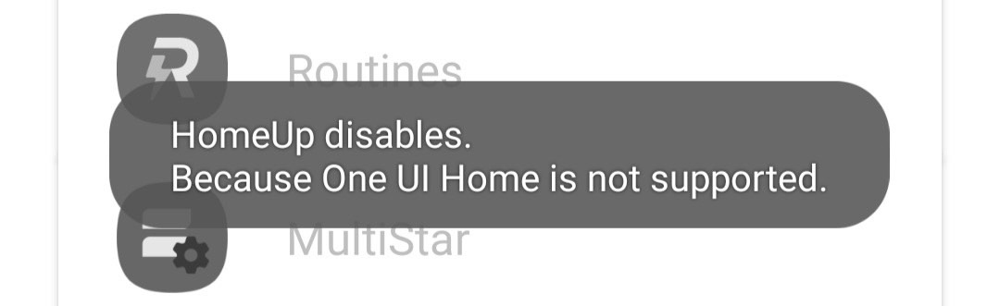

One UI 6 update
Just like every previous year, Samsung must update all modules to make them work on new One UI version. And this year is no exception. After installing One UI 6, make sure the first thing you do next is update all the modules to their latest versions. If you have any questions to ask, please let me know. Have fun with the new One UI 6.
Edge Lighting Plus 2023
Recently Samsung has (re-)introduced a new (or maybe a refreshed) module: Edge Lighting Plus 2023 on One UI 5. However due to Google Play policies, Pure Lock cannot detect the installation state of the module. So a workaround is needed. Please watch this video for how to launch it, assuming you have it installed.
An Pure Lock update is planned. Until it's released, please use the trick from the video above.
PanelStar, AnimationStar, IconStar
Recently there have been a few users asking me about the availability of PanelStar, AnimationStar and IconStar. I'd like to take a moment to clearly confirm that they're absolutely fictional concepts created from a Samsung fan. They have never been real in Good Lock's roadmap. Therefore, support for these modules will never be added.
Camera Assistant on non-S22 models
Previously, Camera Assistant could be working just fine on non-S22 models, such as S21, S20, Note20 and even A53. However, it's been confirmed by a member of Good Lock team at the module was intentionally made exclusively for S22 series. Therefore starting with December patch on various Galaxy devices, Camera Assisant will refuse to work on any devices other than S22, S22 Plus and S22 Ultra. However, it's also confirmed that support for "more devices" will be added in the future. You'll receive a notification when I have anything new to share.
Pure Lock 1.3 series and the future of Pure Lock:
Pure Lock 1.3 series have been released with the following major changes:
However, starting on December 8th 2022, the official Good Lock has been made available in various countries around the world. So your device can have full access to Good Lock, you're recommended to switch. But if there are reasons why you are not sastified, just know that Pure Lock is still here for you. It's my honour and pleasure to bring Pure Lock to you when Good Lock wasn't there. Happy to serve. Thank you very much to all users who have been with me after all these years, especially Pro users who are sweet to give me donations which mean a lot to me and keep Pure Lock being actively maintained. I'm so grateful. Your love and support mean everything to me.
Pure Lock 1.2.13(65):
Pure Lock 1.2.13(65) comes with critical compatibility fix for LockStar 3.0.00.3 - 3.0.00.26 and various visual fixes for Galaxy Tabs. Users are recommended to update right away. And starting on August 20th, new 2022 app icon and themes are rolled out to all users via a server-side remote update. Users will find the option at the end of General settings in Pure Lock's Settings page.
Pure Lock 1.2.12(64):
Pure Lock 1.2.12(64) has been released with some critical bug fixes. Some of those are an issue with ClockFace on certain devices running One UI 1, and a bug with module pinning for Pro users. Please update Pure Lock to the latest version, and tell me if there are any other issues you can find, especially if your device is running One UI 1. As always, I'm all ears to users' feedbacks.
In early April, Google Play announced some policy changes that would soon take effects. One of them is the QUERY_ALL_PACKAGES permission, which affects only devices running Android 11 or higher. However, on around April 5th, a wrong move of Google Play Console was made. They asked me to remove the permission in the build for Android 8 and 9, which are never affected. So I had to create a new release, Pure Lock 1.2.07 for those users in order to keep Pure Lock on Google Play. The release, due to the urgency, was not well tested and therefore, was not really stable. It not only failed to launch LockStar but also contained some code lines that were made for Android 10+ and that caused some crashes, especially for Pro users. The 1.2.08 release did fix some of them but there were some minor crashes, with the unfinished "Pin module" feature. This is my public apology to all Android 8 and 9 users out there, especially Pro users who have been supporting Pure Lock for years. I should have done better, even though things would never have happened if Google Play team had not made the mistake. Please forgive me and I'll do my best to avoid any wrong doings in the future. Thank you very much for having been using Pure Lock for all these years. There's no word can describe how grateful I am. If you find any other issues with Pure Lock, please let me know. My best regards.
Pure Lock 1.2.10:
Pure Lock 1.2.10 brings the major changes and fixes that are listed below. All users are recommended to update as soon as possible. The update is available for all Pure Lock users regardless the Android/One UI versions.
This release is expected to be the final release for Oreo and One UI 1 users. Support for One UI 2 has been extended and will end on December 31st, 2022.
Pure Lock 1.2.05(60):
Pure Lock 1.2.05(60) fixes the issue with Dynamic Wallpaper for Pro users, and brings the following new features. Users are recommended to update as soon as possible.
This is expected to be the final release for One UI 2 users. However, you can always contact me for help anytime regardless whatever One UI version you have.
Good Guardians (One UI 3 and 4 only):
Since the February 2022 updates, Guardian modules now explicitly require Good Guardians and its companion Agent app to be installed. They work the same way as Good Lock and Unit modules since Good Lock 2020 updates. Therefore, if your device is running One UI 3 or 4, you're recommended to download and install Good Guardians and Good Guardians Agent from Pure Lock home page as soon as possible.
NiceShot for One UI 4:
NiceShot has been brought back to life with the newest update for One UI 4 only and it's made for all devices (S, Note, Z, A, and Tab S, Tab A). You can download and install it from Pure Lock home page.
Good Lock updates for One UI 4:
All Good Lock modules have been updated to work on One UI 4. Make sure you update them all after installing One UI 4 update.
App Booster 2.5:
App Booster has been boosted to version 2.5 with optimizations for the upcoming One UI 4. However, it can't overwrite the version 2.0 as a regular update. That's why you'll need to uninstall App Booster 2.0, then install App Booster 2.5.
Mainstream support for One UI 2.0, 2.1 and 2.5:
Good Lock team at Samsung has shifted their focus on One UI 3 and 4, so there won't be no further actual updates for One UI 2. Some updates, on theory, can be installed on One UI 2 and even One UI 1 such as Theme Park, but they don't even bring any fixes or new features. Therefore, Pure Lock will end mainstream support for One UI 2 on December 31st, 2021. After that day, there wouldn't be further Pure Lock updates unless some issues that couldn't be fixed via remote configs came up. Extended support for One UI 2 is expected to end on May 31st, 2022.
The changes don't affect One UI 3 and 4.
As always, you can send me an email for help anytime regardless the Android/One UI versions.
The new Pure Lock:
You may have already seen the new Pure Lock 1.2, which brings a new icon, new 2021 themes, better support for Galaxy Tabs, new animations, and some changes under the hood to make the app more reliable. The goal of Pure Lock is help users around the globe have access to Good Lock and Good Guardian (previously Galaxy Labs) modules to all users around the world as long as their devices are supported. And that never changes. It's my honour to serve and I will continue to do so with all my best.
However, I'm afraid that Pure Lock 1.2.02(52) is expected to be the last version for Oreo and One UI 1 users. It fixes a critical issue that only exists on Galaxy Tabs running those OS versions, which I'm sincerely sorry. The user base of those devices is small but that doesn't mean I don't care about them.
There's no change with One UI 2 and 3 users.
Good Lock 2021 round ups:
Good Lock 2021 suite contains massive changes that comply with the all new One UI 3, and a few more. Why? The answers are held by Good Lock team at Samsung, we might never know. One UI 2 users whose devices are upgradable to One UI 3 are recommended to read this announcement. Those include, but may not limit to:
We also have two new Galaxy Labs modules: Thermal Guardian and Memory Guardian. See the announcement below for more info.
They're available to download from Pure Lock Home page. If you find anything wrong, please contact the developer as soon as possible.
Task Changer, Home Up and Edge Lighting Plus on One UI 3:
On February 25th, we've got a new version of Home Up which contains a new section: Task Changer. The section speaks for itself: All core features of Task Changer are built right into Home Up. That means the Task Changer module is no longer needed on One UI 3. If you still have an old version of Task Changer, you should uninstall it to avoid any possible conflicts. You can download the latest version of Home Up from here. There will be further updates for Home Up which contains more features of Task Changer in future. Therefore, Task Changer is no longer available to download on the home page.
Also, all core features of Edge Lighting Plus have been built right into the system of One UI 3. Which also means Edge Lighting Plus is currently no longer needed One UI 3. That's why the module has been removed from the download section. It will come back if there's any new animations.
This is only applied for One UI 3. There are no changes for One UI 2&1 and Oreo.
New Galaxy Labs modules:
In mid February 2021, we have two brand new Galaxy Labs modules: Memory Guardian and Thermal Guardian. They will be rolled out to all One UI 3 users before Feb 21st via a server-side update. Pure Lock 1.2.00(51) will have support for them out of the box. Thank you for your patience.
The new modules are NOT available for Oreo, One UI 1 & 2 users.
Good Lock 2021 updates:
Finally we have Good Lock 2021 updates. To download all the updates available for One UI 3, please visit Pure Lock home page. Also note that all new updates except One Hand Operation Plus are only made for One UI 3. Unlike Good Lock 2020, all newest versions are not backward compatible with previous One UI versions. Therefore, One UI 2 & 1 users DO NOT upgrade your current modules.
According to some reliable sources, there will be some new modules for One UI 3. The upcoming Pure Lock 1.2.00(51) update with built-in support for them will be released shortly after they are made available.
Mid December 2020 update:
The Mid December update brings a few changes in the app and server:
App side, Pure Lock 1.1.24(50):
Server side:
December 2020 update:
The December update brings new features in the app side and changes in the server side. Users are highly recommended to update as soon as possible for the latest bug fixes and changes:
App side, all users:
App side, One UI 3:
Pure Lock 1.1.23(49) is ready for One UI 3 with the compatible fix due to big changes inside Android 11. However, all of modules other than ThemePark, SoundAssistant and One Hand Operation+ won't work. Samsung Good Lock team is expected to update them in January 2021 with no exact date given. If you're an S20 or Note20 user that really needs Good Lock, it's highly recommended to stick with Android 10 and One UI 2 until the new updates are made available.
App side, Oreo (see the release date below):
Since Good Lock team's focus is only on One UI 2 and 3 (Android 10 and 11), they have no intention to add new features nor fix any issues on Android Oreo with Samsung Experience 9. This is why the upcoming Pure Lock 1.1.23(30) would be the final release for Oreo users, unless there were a critical bug that needed urgent fix. Upgrade to Pro section will be removed for Free users, while all Pro features remain for Pro users. Update via remote configs are also ceased. Users are recommended to upgrade to newer devices. For Pro users: Previous purchase will be restored and Pro features will automatically be unlocked on new devices with the same Google account after Pure Lock is installed.
Pure Lock 1.1.23(30) is expected to be released before the end of 2020.
Server side:
Pure Lock website has been retouched to match the design of Pure Lock app. However, due to the short upcoming One UI 3 release, some components are not yet updated. They will be in the next update wave.
API endpoint for Pure Lock 1.1.03(28) and earlier versions will be closed on December 31st, 2020.
October 2020 update
The October 2020 update includes a few bug fixes and improvements from both server side and app side. Users are highly recommended to update as soon as possible to receive the latest patches.
Server side:
App side (Pure Lock 1.1.14(44)):
How to fix some issues related to September patches:
The September security patches might stop the Unit modules from working properly on some devices including Note 10, A30, A70 and A71. If you experience the issue, please do the following steps:
After that, everything should be fine. If it's not fixed for you, feel free to send me an email.
New modules: Pentastic, Wonderland and new features in HomeUp and MultiStar
In September and October 2020, we have two new modules: Penstatic and Wonderland, as well as new features added to HomeUp and MultiStar. To find out what's new, please visit Samsung Newsroom. Penstatic is only available for devices with S Pen, which include but not limit to: Note 9 series, Note 10 series, Note 20 series, Tab S4, Tab S5e, Tab S6, Tab S7 running One UI 2.1-2.5. You can download them from the Home page.
Support for new modules has been rolled out to users with Pure Lock 1.1.03(28) - 1.1.13(43) via a server-side update.
July 2020 update
The July 2020 update includes many bug fixes and improvements from both server side and app side. Users are highly recommended to update as soon as possible to receive the latest patches.
Server side:
App side (Pure Lock 1.1.11(41)):
Support for HomeUp
Since late April 2020, we have a new module called HomeUp. It will appear on your module list via a server-side update, which means you don't need to wait for a new update on Google Play. The only thing you need to do is restart Pure Lock and it will be there. However, HomeUp only works on A40+, S and Note devices running Android 10 and One UI 2 with the latest security patch and One UI Home from Galaxy Store. If your device is not supported, HomeUp will crash and you'll see something like the screenshot below:

In that case, please do the following steps:
Support for Game Plugins
Thanks to a feature request, Pure Lock now supports managing Game Plugins on Android 10. You can find and get it from the Pure Lock home page. However, Game Plugins modules won't be managed. This is a server-side update, so there's no update required unless you have Pure Lock version 1.0.17(24) or an older version. In that case, please update Pure Lock right now via Google Play.
After you have Game Plugins installed, it will appear on your app list. Please launch it and follow what's on your screen to install Game Booster Plus, Daily Limits and Perf Z, which can be easily installed from Galaxy Store.
NavStar 2.0.00.0 does not work on a few models
The NavStar 2.0.00.0 crashes on a few models such including Note 10 series while it works perfectly on other ones including S10 series. Though it shows you "Pure Lock is stopped", this is actually a problem from Samsung and not from Pure Lock. If you experience the crash, please wait for the next release. Thank you very much for your patience, but I can do nothing about that. Only Samsung can fix the error.
Download options
Since March 2020, Android 10 and 9 users can jump straight to download pages of the latest versions of Good Lock modules without manually picking up from the list by selecting "Latest versions" in Download options. If you wish to use the old option, for example, to install an old module version, please select "Manually select versions" from the drop down menu.
Note for Android 8 and 9 users: If you have the latest versions of LockStar (1.1.00.12), MultiStar (2.5.02), QuickStar (2.5.03.4) and Pure Lock still says "There are updates available", please just ignore that and continue using these versions. The latest releases are only made to work on Android 10.
Good Lock
Since most of Unit modules require Good Lock to be installed so they can work correctly, such as LockStar, NotiStar, QuickStar and MultiStar, Good Lock is now included in the modules list and temporarily treated like a Family module. You can find and get it from the Pure Lock home page.